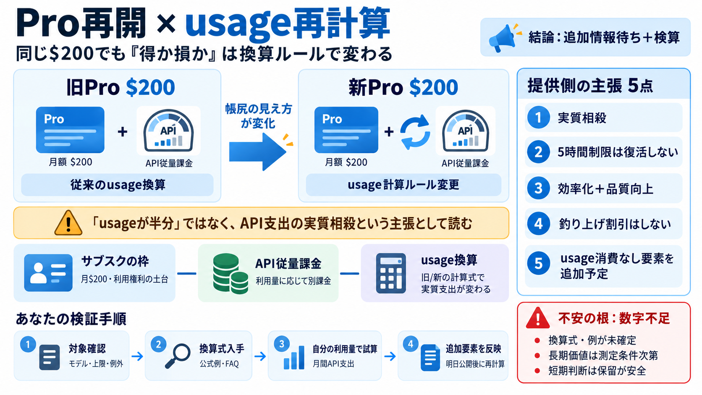

OpenAI Release Notes - September 2026 Latest Updates - Releasebot
The GPT‑6 models lead across the cost–intelligence curve, combining exceptional capabilities at every tier with infrastr…

月$200（明日から再開）。usage換算の“前提”になる。
利用量に応じて別課金。トークン課金の前提がある。
usageの計算方法（換算ルール）を調整。
旧Pro比でAPI支出が「相殺」されるように見せる。
旧Pro$200比でAPI支出が「半ドル分」程度に相殺される、という趣旨。
以前の「5時間制限」等を復活させない方針（柔軟性の維持）。
効率化と品質向上で、長期的により多く・より高品質になる。
APIのリスト価格を不自然に釣り上げない（割引で帳尻合わせしない）方針。
明日、usageを消費しない追加要素を投入予定（詳細は未公開）。
本投稿は透明性を意図するが、換算の具体例不足が誤解を生む余地。
従来のusage換算ルールでAPI支出が見える。
usage計算ルール変更で、API支出の見え方が変わる。
結果としてAPIコストが「半ドル分」程度相殺。
対象モデル・上限・例外・換算式が必要（本文からは未確定）。
制限がないほど、週次・日次の運用で柔軟に計画できる。
公式の制限（ある/ない）、対象期間、例外条件を確認する必要がある。
同じ目的をより少ないコスト（usage/従量）で達成できる方向。
出力品質が上がり、手戻りコストが減る。
短期より長期で“仕事量×品質”が積み上がる。
価格を釣り上げて、見かけの得を演出する。
価格下げ＋能力向上で価値を作る。
過去の値下げ実績や実測挙動で納得度を測る。
説明の意図は理解できるが、数値検証が要る。
どのモデル群・どの利用タイプが対象か（上限・例外含む）。
旧/新でusageがどう換算されるか、公式例・FAQを探す。
月間の利用量（だいたいで可）を当てて、API実支出の帳尻を見る。
明日追加の“usageを消費しない”内容を見て再計算する。
換算例・式がないため、判断材料が不足。
効率化・品質向上の“条件”が見えにくい。
明日追加の要素が未公開で、購入判断が先延ばしになり得る。
「結局得？」という反応が出やすい構造。
長期での価値・信頼性を意識した説明。
換算式・例が薄く、短期判断が難しい。
自分の月間利用で試算し、必要なら乗り換え/調整。
得失は“追加情報待ち＋検算”で確定させる。
Pro再開告知、usage計算の変更点、対象モデル、上限/例外、追加要素。
APIはサブスクとは別に従量課金（例：トークン課金）の前提。
例としてGPT-6 Sol / GPT-6 Lunaの50%引き等の言及（リリース系情報）。
旧Proと新Proの“換算式・例”を並べ、あなたの利用量で帳尻を再計算。
本文の「半ドル相当」は“利用量半減”ではなく“帳尻の趣旨”として扱うのが安全。
明日公開の“usageを消費しない要素”を反映して結論を更新。
The GPT‑6 models lead across the cost–intelligence curve, combining exceptional capabilities at every tier with infrastr…
Substantially more usage – “Choose 5× or 20× more usage per session than Pro” according to Anthropic (( The $100/mo tier…
[]( China September 21, 2026 # CXMT’s newest DRAM narrows the gap with Samsung and SK hynix, without EUV tools []( …
## TL;DR Individual plans run $0 (Free) → $20/mo (Pro) → $100–$200/mo (Max). Annual Pro billing drops to $17/month. A…
The Anthropic API is billed per token, separate from subscriptions. As of September 2026, Claude Fable 5.1 is $10 input …